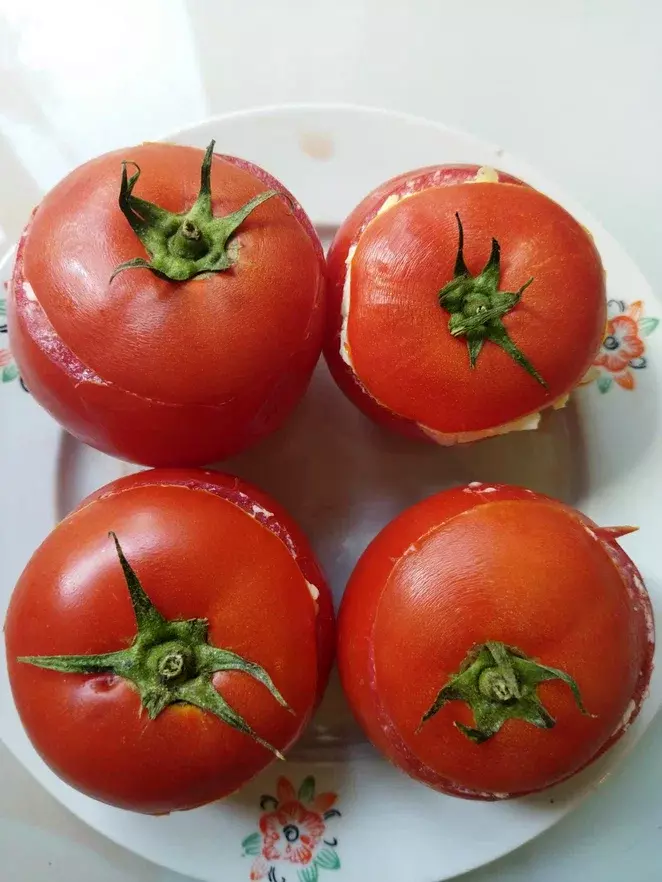
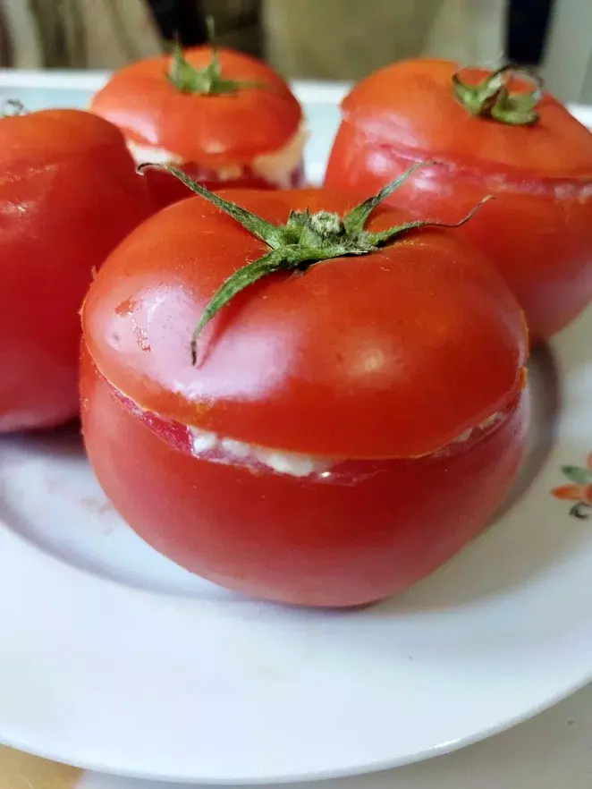

Готовые фаршированные помидоркиПростая и вкусная закуска. Использовать нужно свежие, большие помидоры. Из внутренностей помидор можно
потом сделать аджику.
На 4 большие помидоры 3 маленьких яйца и примерно 200 г сыра.
Продукты:
Способ приготовления:
От помидор отрезать "крышечку" - верхнюю часть с хвостиком.
Потом столовой ложкой извлечь внутреннюю, жидкую часть помидор, чтоб стенки были максимально гладкими
Далее начинка: поставить вариться яйца, в это время натереть сыр и чеснок на тёрке
Сваренные яйца тоже натереть на тёрке, смешать с сыром
Натёртые яйца с сыром заправить майонезом (или самой жирной сметаной), посолить, поперчить, добавить
зелень,
всё смешать в одну массу
Столовой ложкой аккуратно закладывать начинку в каждую помидорку
Каждую помидорку украсить зеленью, или накрыть отрезанной ранее "крышечкой"